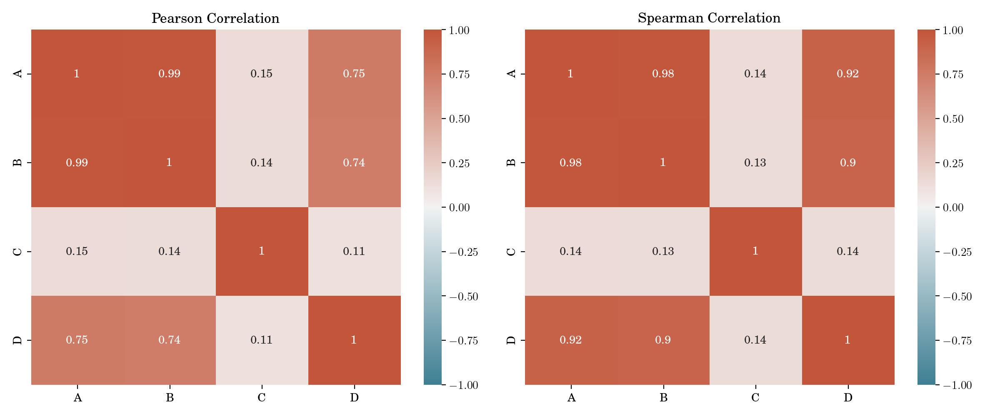
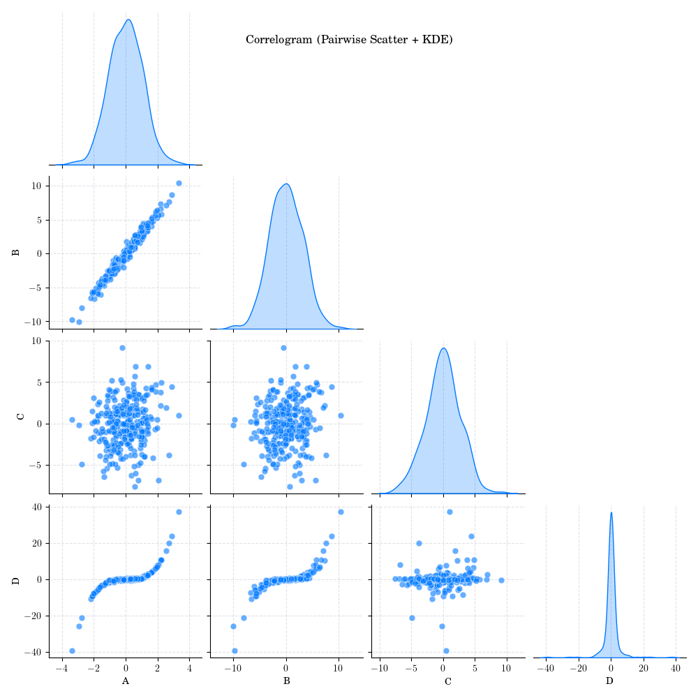

Note
Go to the end to download the full example code.
Pearson Correlation Multiple Pairs#
- 
- 

# Author: Dialid Santiago <d.santiago@outlook.com>
# License: MIT
# Description: Advent Calendar 2025 - Plot Pearson Correlation for Multiple Variable Pairs
import numpy as np
import pandas as pd
import matplotlib.pyplot as plt
import seaborn as sns
plt.style.use("https://raw.githubusercontent.com/quantgirluk/matplotlib-stylesheets/main/quant-pastel-light.mplstyle")
np.random.seed(17)
custom_cmap = sns.diverging_palette(220, 20, as_cmap=True)
# ----------------------------------------------------
# 1. Generate structured dataset
# ----------------------------------------------------
n = 300
# A: base variable
A = np.random.normal(0, 1, n)
# B: strong linear correlation with A
B = 3*A + np.random.normal(0, 0.5, n)
# C: weak linear correlation with A (low slope + more noise)
C = 0.3*A + np.random.normal(0, 2.5, n)
# D: cubic relationship with A
D = (A**3) + np.random.normal(0, 0.3, n)
data = pd.DataFrame({"A": A, "B": B, "C": C, "D": D})
pear = data.corr(method="pearson")
spear = data.corr(method="spearman")
# ----------------------------------------------------
# 2. Pearson & Spearman heatmaps
# ----------------------------------------------------
fig, ax = plt.subplots(1, 2, figsize=(12,5), dpi=200)
sns.heatmap(pear, annot=True, cmap=custom_cmap, vmin=-1, vmax=1, ax=ax[0])
ax[0].set_title("Pearson Correlation")
sns.heatmap(spear, annot=True, cmap=custom_cmap, vmin=-1, vmax=1, ax=ax[1])
ax[1].set_title("Spearman Correlation")
plt.tight_layout()
plt.show()
# ----------------------------------------------------
# 3. Correlogram (pairplot with KDE diagonals)
# ----------------------------------------------------
fig = sns.pairplot(
data,
diag_kind="kde",
corner=True,
plot_kws={"alpha": 0.6, "s": 40}
)
fig.figure.suptitle("Correlogram (Pairwise Scatter + KDE)", y=0.95)
# plt.tight_layout(False)
# plt.suptitle("Correlogram (Pairwise Scatter + KDE)", y=1.08)
plt.show()
# ----------------------------------------------------
# 4. Custom Scatter Plot Panel
# ----------------------------------------------------
vars = data.columns
n = len(vars)
fig, axes = plt.subplots(n, n, figsize=(12, 12))
for i in range(n):
for j in range(n):
ax = axes[i, j]
if i == j:
ax.hist(data[vars[i]], bins=20, color="pink", alpha=0.7)
ax.set_ylabel(vars[i])
else:
ax.scatter(data[vars[j]], data[vars[i]], s=15, alpha=0.5)
if i < n-1:
ax.set_xticklabels([])
if j > 0:
ax.set_yticklabels([])
if i == n-1:
ax.set_xlabel(vars[j])
plt.suptitle("Scatter Plot Panel for All Variable Pairs", y=0.99)
plt.tight_layout()
plt.show()
Total running time of the script: (0 minutes 7.469 seconds)